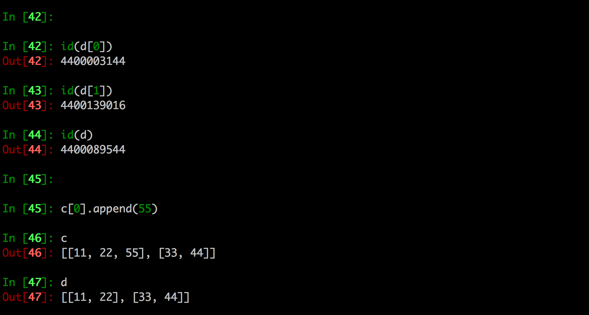
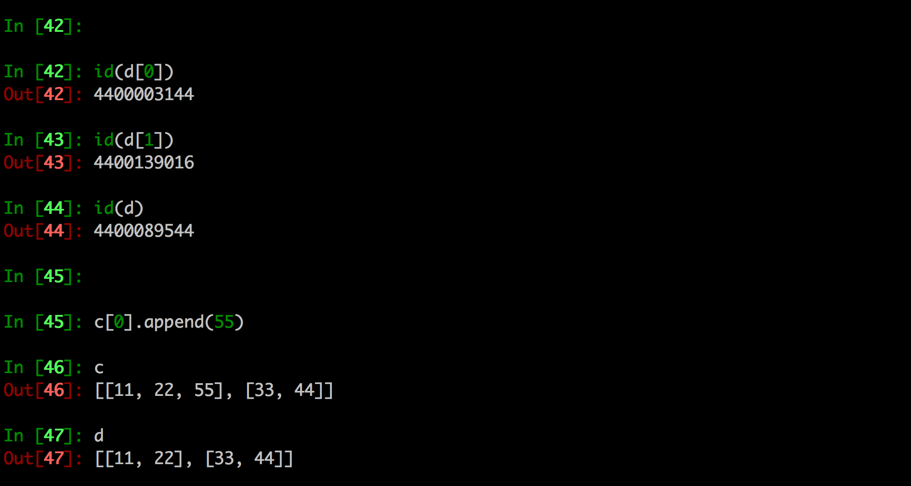
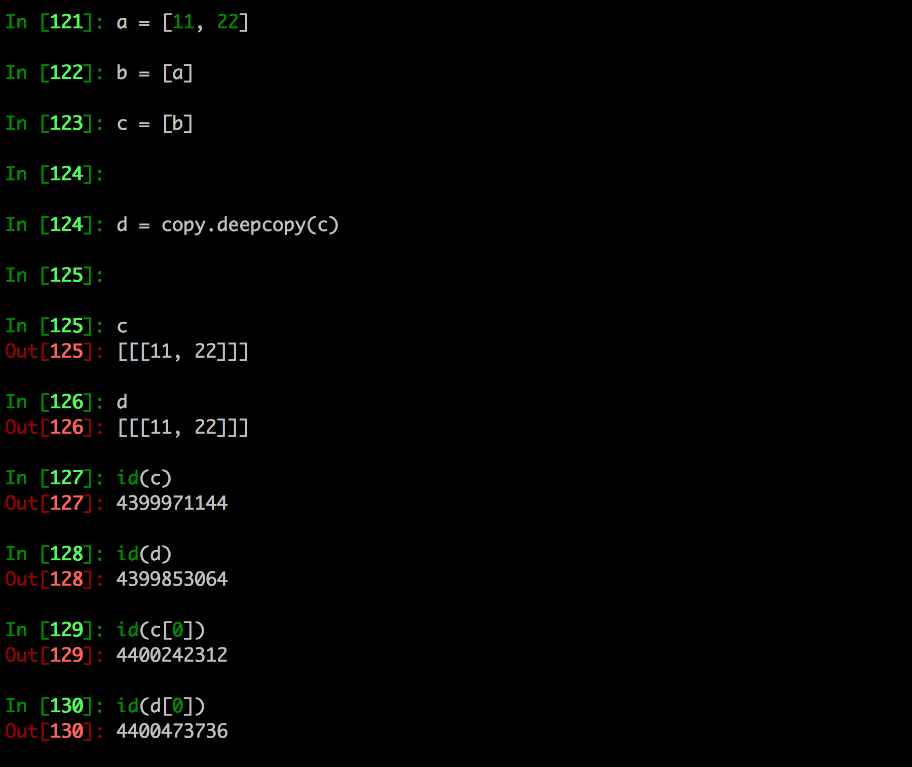

深拷贝、浅拷贝
1. 目的
现在有个需求，遍历当前程序的文件夹，获取到所有文件，然后调用了一个函数对这些文件简单的测试了一下
代码简单的测试如下：
import os
def count_file(files):
"""
测试列表中，非隐藏文件的个数
:param files:
:return:
"""
# 4. 提出隐藏文件名
temp = ""
for temp in files:
if temp.startswith("."):
files.remove(temp)
# 5. 排序打印测试
files.sort()
for file in files:
print(file)
# 1. 遍历出当前文件夹中所有的文件
file_names = os.listdir(".")
print("-" * 30)
# 2. 打印所有的文件名
for file in file_names:
print(file)
print("-" * 30)
# 2. 调用一个函数，用来测试除了隐藏文件之外的文件的个数
count_file(file_names)
print("-" * 30)
# 3. 打印所有的文件名
for file in file_names:
print(file)
运行效果：
看到有什么问题吗？
有没有发现在调用函数count_file之后，原来的列表也被修改了，在开发过程中，往往要保留原列表的样子，此时为了能够在调用count_file时，不让这个函数对原数据修改，需要将备份传递，而不是默认的引用传递
2. 拷贝的方式
拷贝：就是复制，但是在Python中有2种不同的拷贝程度
- 深拷贝
- 浅拷贝
3. 浅拷贝
浅拷贝：对于一个对象的顶层拷贝
通俗的理解是：拷贝了引用，并没有拷贝内容


4. 深拷贝
深拷贝：对于一个对象所有层次的拷贝(递归)

进一步理解深拷贝
 

5. 拷贝的其他方式
切片表达式可以复制一个序列(例如列表等)

- 字典的copy方法可以拷贝一个字典

6. 注意点
6.1 浅拷贝对不可变类型和可变类型的copy不同
copy.copy对于可变类型，会进行浅拷贝copy.copy对于不可变类型，不会拷贝，仅仅是指向
In [88]: a = [11,22,33]
In [89]: b = copy.copy(a)
In [90]: id(a)
Out[90]: 59275144
In [91]: id(b)
Out[91]: 59525600
In [92]: a.append(44)
In [93]: a
Out[93]: [11, 22, 33, 44]
In [94]: b
Out[94]: [11, 22, 33]
In [95]: a = (11,22,33)
In [96]: b = copy.copy(a)
In [97]: id(a)
Out[97]: 58890680
In [98]: id(b)
Out[98]: 58890680

6.2 copy.copy和copy.deepcopy的区别
copy.copy


说明：
copy.copy不是因为遇到了不可变类型才不拷贝的，而是最多就只拷贝最顶层
copy.deepcopy


7. 总结
拷贝其实很简单，只是有时仅仅是最顶层的那个引用拷贝了，有时又编程了递归拷贝，到底用哪种？
简单来说，如果浅拷贝能用则用，否则再用深拷贝，这样节省内存
8. 作业
解决刚开始时，所说的问题
import os
import copy
def count_file(files):
"""
测试列表中，非隐藏文件的个数
:param files:
:return:
"""
# 4. 提出隐藏文件名
temp = ""
for temp in files:
if temp.startswith("."):
files.remove(temp)
# 5. 排序打印测试
files.sort()
for file in files:
print(file)
# 1. 遍历出当前文件夹中所有的文件
file_names = os.listdir(".")
print("-" * 30)
# 2. 打印所有的文件名
for file in file_names:
print(file)
print("-" * 30)
# 2. 调用一个函数，用来测试除了隐藏文件之外的文件的个数
count_file(copy.deepcopy(file_names)) # ----------这行修改了------------
print("-" * 30)
# 3. 打印所有的文件名
for file in file_names:
print(file)
运行效果如下：